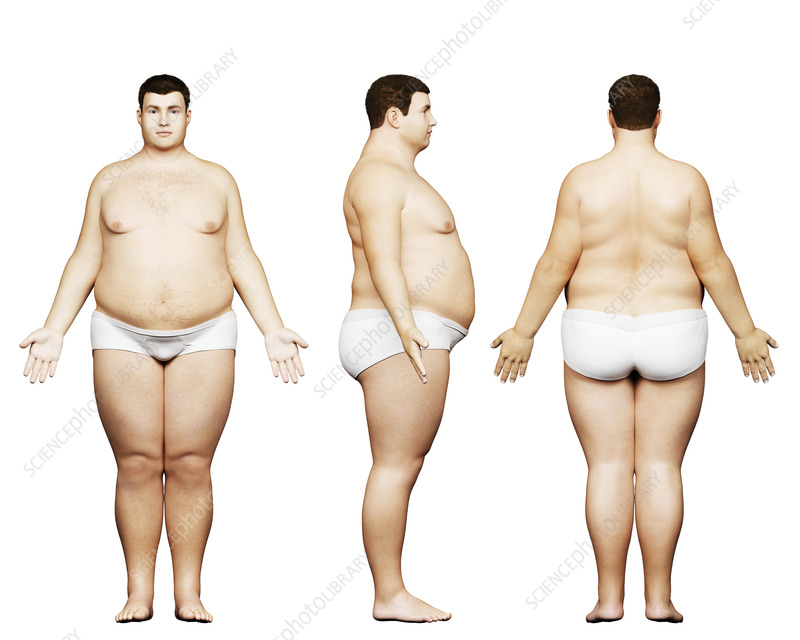

Workout Routines for Different BMI Categories
Workouts for Low BMI

- Strength Training: Focus on compound movements like squats and deadlifts.
- Calorie-Dense Meal Planning: Incorporate nuts, seeds, and lean meats.
- Consistent Schedule: Ensure a regular workout routine to build mass.
Workouts for Normal BMI
- Mixed Cardio: Include a balance of high-intensity and steady-state cardio.
- Varied Strength Training: Cycle through muscle groups for balanced development.
- Flexible Dieting: Maintain a balanced diet with a moderate surplus or deficit as needed.
Workouts for High BMI

- Low-Impact Cardio: Start with walking, cycling, or swimming to reduce joint stress.
- Beginner Strength Training: Utilize bodyweight exercises or light weights to build strength gradually.
- Portion Control: Focus on whole foods and control portions to support weight loss.